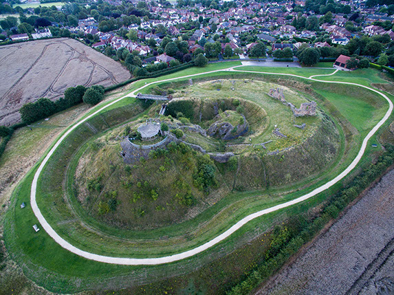
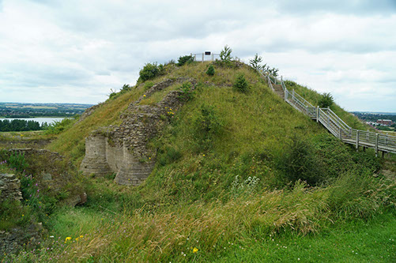

England > Yorkshire
SANDAL CASTLE
Looking for details on the Battles of Wakefield (1460)? Click here for the dedicated article .
Sandal Castle was one of two fortifications built in Wakefield during the twelfth century. It served as the administrative centre for the manor and was later rebuilt into a lavish residence. During the Wars of the Roses, the Battle of Wakefield (1460) was fought nearby. The castle endured a siege during the seventeenth century Civil War and thereafter Parliament ordered its demolition.
History
Gallery
Getting There
Introduction
Wakefield is located upon the River Calder, a major waterway that provided an important means of moving east/west across the country and also (via the Rivers Aire and Ouse) connected the site to the sea. It was also in vicinity of a major north/south road. For both these reasons it was regarded as an important nodal point and accordingly it was the recipient of two motte-and-bailey fortifications: Wakefield (Lowe Hill) Castle and Sandal Castle.
Initial Construction
Sandal Castle is located on the southern side of the River Calder. Although the first surviving record of the structure dates from circa-1240, the fortification was constructed much earlier. It is generally attributed to William de Warenne, Second Earl of Surrey who had been granted Wakefield for his support to Henry I during the Battle of Tinchebray (1106). Construction of the castle, which was an earth and timber motte-and-bailey fortification, probably started soon afterwards with the site serving as the administrative centre of the Wakefield manor. The location chosen was an undeveloped site, a little under two miles to the south of Wakefield, reflecting the political reality that forty years after the Norman invasion, castles no longer needed to be super-imposed upon existing urban centres. Instead it was constructed at a location where it lay at the heart of the arable and population resources across the wider manor.
Rebuilding
The Warennes were one of the wealthiest and most powerful families in post-Conquest England. They owned extensive lands across the country including Castle Acre , Lewes , Reigate and also had substantial holdings in Varenne in Normandy. Furthermore, they already had extensive estates in Yorkshire centred around Conisbrough . For all these reasons Sandal Castle received little attention during the remainder of the twelfth century. However, circa-1230 Sandal Castle was rebuilt by John de Warenne, Sixth Earl of Surrey. He enlarged the motte and topped it with an elaborate stone built Shell Keep augmented by three circular towers. Extending to the west was the D-shaped bailey which was also rebuilt and a substantial barbican added. The eastern portion of the bailey was occupied by the Great Hall whilst further ranges were constructed in the north-east and south sides. The entrance into the bailey was on the north. The entire site was surrounded by a substantial ditch.
Sandal Castle was substantially enhanced by John de Warenne, Earl of Surrey. This included enlargement of the motte and construction of a stone Shell Keep on its summit.
Earl of Lancaster
The castle was besieged and captured by Thomas, Earl of Lancaster in 1317. The then owner of Sandal Castle was John de Warenne, Seventh Earl of Surrey who had a personal vendetta with Thomas. Scandalously one of John's squires had eloped with his wife, Joan, to Reigate Castle. When John sought to divorce his wife, Thomas attempted to prevent it prompting a private war between the two magnates. Sandal Castle was seized by Thomas as was Conisborough . Both were retained by the Earl of Lancaster until his execution in March 1322. Thereafter they were held by the Crown until 1326 after which they were returned to the Warenne family.
Duke of York
In 1347 the legitimate male line of the Warrene family died out and the castle reverted to the Crown. The same year Edward III granted it to his son, Edmund of Langley, later Duke of York. When Edmund died in 1402 the Dukedom, including Sandal Castle, passed to his son, Edward, who died at the Battle of Agincourt (1415). As he was childless the Dukedom then passed to his nephew, Richard, who was the son of Richard of Conisbrough, Earl of Cambridge - one of the conspirators in the Southampton plot to assassinate Henry V.
In the fourteenth and fifteenth centuries, Sandal Castle was both a strong fortress and lavish residence. Little remains of this grandeur due to destruction during the Civil War.
Wars of the Roses
In 1399 Henry Bolingbroke had overthrown the unpopular Richard II and taken the crown as Henry IV. Widely supported by the nobility at the time, the usurping of the normal line of succession was sustained as both Henry and his son, Henry V, were effective Kings. However, by the 1450s the government of Henry's grandson, Henry VI, was deeply unpopular. He suffered bouts of periodic mental illness and, unlike his father, was not a military commander resulting in England suffering dramatic defeats on the continent. This provided the backdrop for the ambitious Richard, Duke of York to seek power. He served as Lord Protector during Henry VI's incapacity but, when the King recovered his senses in March 1454, he found himself out of power. This was unacceptable for Richard and he sought to advance his claim for the throne. He had a compelling case - although he was a direct descendant of Edmund of Langley, Edward III's fourth eldest son, he was also able to claim descent (through the female line) from the second eldest, Lionel of Antwerp. This seemingly trumped Henry VI whose claim was based on descent from John of Gaunt, Duke of Lancaster, Edward III's third eldest son. Richard raised an army and, after initial skirmishes, the two factions fought each other at the first Battle of St Albans (1455). Although a truce quickly followed, the bitterness with which that battle was fought - resulting in the deaths of several prominent Lancastrian supporters including Edmund Beaufort, Duke of Somerset and Henry Percy, Earl of Northumberland - set the tone for the rest of the war.
In 1459 the fragile peace between the Lancaster (Henry VI) and York (Richard, Duke of York) factions broke down. The Yorkist commander Richard Neville, Earl of Warwick defeated the Lancastrians at the Battle of Northampton (1460) and captured Henry VI. The Yorkists sought to have Richard of York crowned as King but failed to secure sufficient backing. However, they did achieve agreement for the Act of Accord; an agreement re-instigating Richard as Lord Protector and also making him heir to the King. Faced with the disinheriting of her son, Queen Margaret of Anjou raised an army in the north and mustered them at Pontefract Castle . Richard deployed to intercept and on 21 December 1460 was back at his own Sandal Castle. An initial sortie was made towards Pontefract but was repulsed and Richard returned to Sandal to see out Christmas and await the arrival of his son, Edward, with reinforcements.
The Battle of Wakefield (1460)
The Battle of Wakefield was fought outside the walls of Sandal Castle on 30 December 1460. Little is known about the engagement but a large Lancastrian force mustered in vicinity of the castle. Richard, safe behind the impregnable walls of Sandal, bizarrely chose to leave the security of the fortress and led his men down the hill to engage the Lancastrian force. His rationale for doing so is not known. Perhaps he was short of supplies or was tricked into thinking that the Lancastrians did not have the numerical advantage. Either way once he was on the flat ground below the castle he was ambushed and his forces surrounded. His men were slaughtered and Richard, as well as his second eldest son, were killed in the fighting. Few of the forces successfully escaped back to Sandal Castle.
A monument marks the place where Richard, Duke of York fell after being ambushed by Lancastrian forces.
Aftermath
The death of Richard of York did not end the conflict nor did the Lancastrian victory at the Second Battle of St Albans two months later. Richard's eldest son, Edward, assumed the mantle as Duke of York and he secured decisive victories at the battles of Mortimer's Cross (2 February 1461) and Towton (29 March 1461) which secured him the throne. Sandal Castle, originally a possession of Richard, passed to Edward and with his accession to the throne as Edward IV in 1461 it became a Royal castle once more.
Later History of Sandal Castle
The Wars of the Roses rumbled on intermittently for a further twenty-five years. Despite briefly being ousted by forces loyal to Henry VI, Edward managed to retain his Crown for life. He continued to make periodic use of Sandal Castle including using it as one of two venues (the other was Sheriff Hutton Castle ) to host the Council of the North, a body designed to improve Royal administration in Northern England.
Following Edward IV's death in 1483, the castle passed to his son, Edward V (one of the Princes in the Tower). However, he was set aside and instead followed by Richard III (formerly Duke of Gloucester). Richard made substantial upgrades to Sandal Castle including adding the polygonal tower to the Keep. However, his reign was short and he was killed at the Battle of Bosworth Field (1485) . The new King, Henry VII, had little use for Sandal Castle and the structure was neglected although it continued to serve as a local prison until the late sixteenth century.
The Civil War
By the time the Civil War started in Autumn 1642, Sandal Castle was in a state of disrepair. It was garrisoned for the King and additional earthwork defences constructed but, despite Wakefield itself being attacked by Parliamentary forces under Fairfax in May 1643, it saw no action until the final year of the war. In early 1645 it was placed under siege by Parliamentary forces under Sir John Savile but the castle's garrison sallied out and mounted a successful counter-attack. However, following the Battle of Naseby , which had destroyed the King's Field Army, Parliament had increased capacity to reduce Royalist strongholds. In July 1645 Pontefract Castle fell and both manpower and artillery were re-directed to Sandal. The garrison remained defiant but, under the command of General Poyntz, extensive siege works were dug and the castle was bombarded into submission finally surrendering on the 1 October 1645. It was one of the last castles in Yorkshire to hold out for the King with only Bolton Castle and Skipton Castle remaining in Royalist hands.
Demolition
Due to its long resistance during the Civil War, Sandal Castle joined the long list of fortifications condemned by Parliament and between 1646 and 1648 it was systematically demolished. It was left in ruins and subsequently quarried for its stone. The castle remained abandoned until Wakefield Council funded clearance and excavations of the site in 1964.
Bibliography
Allen, R (1976). English Castles . Batsford, London.
Armitage, E.S (1904). Early Norman Castles of the British Isles . English Historical Review Vol 14 (Reprinted by Amazon).
Beresford, M.W and St Hoseph, J.K.S (1979). Medieval England - An Aerial Study . Cambridge University Press, Cambridge.
Creighton, O.H (2002). Castles and Landscapes: Power, Community and Fortification in Medieval England . Equinox, Bristol.
Douglas, D.C and Greeaway, G.W (ed) (1981). English Historical Documents Vol 2 (1042-1189) . Routledge, London.
Douglas, D.C and Rothwell, H (ed) (1975). English Historical Documents Vol 3 (1189-1327) . Routledge, London.
Historic England (1992). Lowe Hill motte and bailey castle, List entry 1010054 . Historic England, London.
Historic England (1992). Sandal Castle: motte and bailey castle and shell keep castle, List entry 1012075 . Historic England, London.
King, C.D.J (1983). Castellarium anglicanum: an index and bibliography of the castles in England, Wales and the Islands . Kraus International Publications.
Liddiard, R (2005). Castles in Context: Power, Symbolism and Landscape 1066-1500 . Macclesfield.
Salter, M (2001). The Castles and Tower Houses of Yorkshire . Folly Publications.
Turner, M (2004). Yorkshire Castles: Exploring Historic Yorkshire . Westbury.
What's There?
Visit Official Website
Sandal Castle is a magnificent ruin. The remains consist of substantial earthworks and masonry fragments of the medieval castle. Of note is the impressive barbican. The site also affords a good view of the Wakefield (1460) battlefield and there is a monument to the slain Richard, Duke of York further north on Manygates Lanes.
Sandal Castle Layout . The castle consisted of a large motte topped with a shell keep. To the east was a D-shaped bailey which hosted both the Great Hall, high-status accommodation and the ancillary/service buildings. Between bailey and the motte was a substantial barbican.
Motte . The motte was originally topped by a shell Keep. This was augmented by four circular towers, two of which were placed close together to flank the drawbridge that connected the Keep with the barbican.
Barbican . A substantial section of the internal footprint of Sandal Castle was occupied by the Barbican. This was built on an island of rock and accessed via a drawbridge from the bailey into a central enclosure. Visitors then had to cross a second drawbridge into a barbican corridor which led up the motte towards the Keep gatehouse.
Sandal Castle Earthworks . The castle's bailey was protected by a substantial ditch.
Sandal Castle in Context . The relationship between Sandal and Wakefield castles is not known although it is likely that Wakefield was predominantly responsible for control of the River Calder whilst Sandal Castle served as the administrative centre for the manor of Wakefield.
Battle of Wakefield (1460) . The battle was fought on the flat ground to the north of Sandal Castle.
Sandal Castle is found off the A61 to the south of Wakefield. The castle is well sign-posted and has a dedicated car park. The battlefield monument is found a short way along Manygates Lane.
Sandal Castle / Car Park
Manygates Lane, WF2 7DW
53.658605N 1.489276W
Duke of York Monument
Manygates Lane, WF2 7DQ
53.663445N 1.488770W
(c) Copyright 2019 CastlesFortsBattles.co.uk
Recovered original photographs, plans and images

